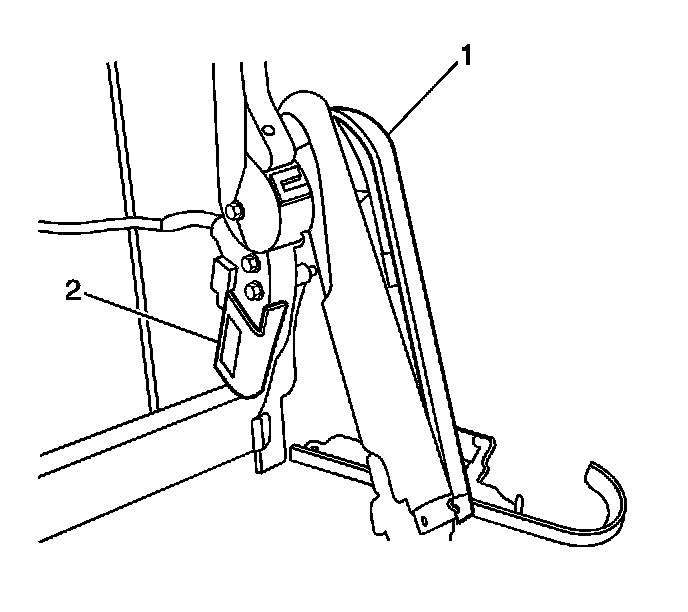
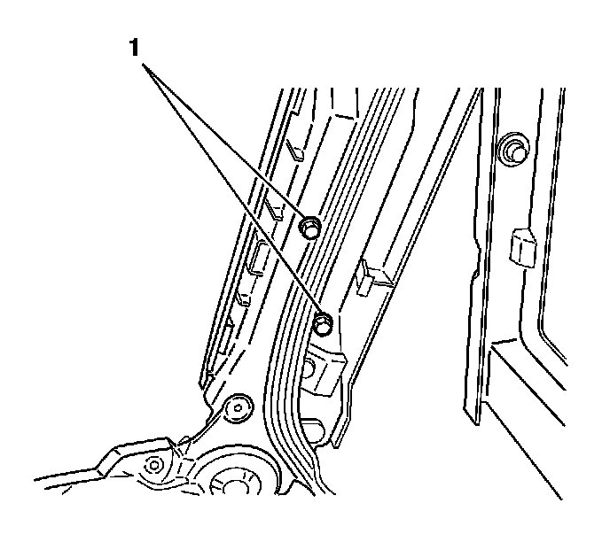

Rear Seat Number 2 Back Pivot Actuator Motor Replacement - Back Cushion
Rear Seat Number 2 Back Pivot Actuator Motor Replacement - Back Cushion
Removal Procedure
1. Remove the seat from the vehicle. Refer to Rear Number 2 Folding Seat Replacement (Rear Number 2 Folding Seat Replacement) .
2. Remove the rear seat back panel. Refer to Rear Seat Number 2 Back Cushion Panel Replacement (Rear Seat Number 2 Back Cushion Panel Replacement) .
3. Remove the head restraints. Refer to Rear Seat Number 2 Head Restraint Replacement (Rear Seat Number 2 Head Restraint Replacement) .
4. Remove the rear seat back cover. Refer to Rear Seat Number 2 Back Cushion Cover and Pad Replacement (Rear Seat Number 2 Back Cushion Cover and Pad Replacement) .

5. Remove the inner recliner arm covers (1) from the seat back.

6. Remove the outer recliner arm cover screws (1).
7. Remove the outer recliner arm pivot covers.
8. Disconnect the electrical connector form the rotation motor.
9. Remove the rotation motor bolts (2).
10. Slide the rotation motor off of the driveshaft.
Installation Procedure
1. Slide the rotation motor on to the driveshaft.
Notice: Refer to Fastener Notice (Fastener Notice) ,
2. Install the rotation motor mounting bolts (2).
Tighten the bolts to 7 N.m (62 lb in).
3. Connect the electrical connector to the rotation motor.
4. Install the outer recliner arm pivot covers.
5. Install the outer recliner arm cover screws (1).
Tighten the screws to 2 N.m (18 lb in).
6. Install the inner recliner arm covers (1) to the seat back.
7. Install the rear seat back cover. Refer to Rear Seat Number 2 Back Cushion Cover and Pad Replacement (Rear Seat Number 2 Back Cushion Cover and Pad Replacement) .
8. Install the head restraints. Refer to Rear Seat Number 2 Head Restraint Replacement (Rear Seat Number 2 Head Restraint Replacement)
9. Install the rear seat back panel. Refer to Rear Seat Number 2 Back Cushion Panel Replacement (Rear Seat Number 2 Back Cushion Panel Replacement) .
10. Install the seat in the vehicle. Refer to Rear Number 2 Folding Seat Replacement (Rear Number 2 Folding Seat Replacement) .
11. Calibrate the seat. Refer to Power Folding Seat Calibration (Programming and Relearning) .